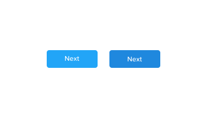

Nutanix Soft
A typeface case study for Nutanix Soft
We created Nutanix Soft in 2016, it has since then, become the main typeface for all our web interfaces. The goal at the time was to improve legibility across different screen resolutions.
Background
In 2015, while defining the visual direction for the Nutanix Cloud platform - Xi, I did a typeface evaluation which highlighted some legibility issues created by the improper rendering of some of the connectors and shoulders.
These problems needed to be addressed in the early stages of the project. The typeface choice has deep effect in tone of voice, propotions and other visual attributes.
I explored alternative typefaces that were known for their approach to legibility in different devices and screen densities.
After a couple of weeks of testing the effects of these other fonts in the look and feel, it became clear that the product's personality was too tighly associated with the rounded nature of our typeface. A decision made to bring a slight playfulness to the interface.
It took a several discussions with the larger team, but we decided that creating a new font was the right way to go. We started looking for someone that could help creating a typeface to solve the rendering issues but been able retain the product personality.
During that time we were working with Matt Chadwell. He was alredy working on Xi in product-branding work, so we comissioned the project to him.
The process
We needed a font that will cover all our typesetting needs, which included:
- Bring a larger range of font-weights.
- We needed to make sure the font rendered sharply in a wide range of pixel density displays
We started analysing all glyphs of the typeface under all conditions, determining how the next iteration of our product typeface should evolve. We referenced clear typefaces like San Francisco and Proxima Nova, which were developed with multi devices in mind.

Line-height improvements A 
Font Characterisitics
Nutanix Soft is a rounded san-serif typeface with a more geometrical counter space in its letters. This gives the typeface better legibility is lower density displays.

Introducing Nutanix Soft thin
What is next for the typeface
Today we continue to improve upon our typeface by standarizing it's usage across the company. Today there are dialogs with the marketing team to improve the typeface to cater to large print formats.